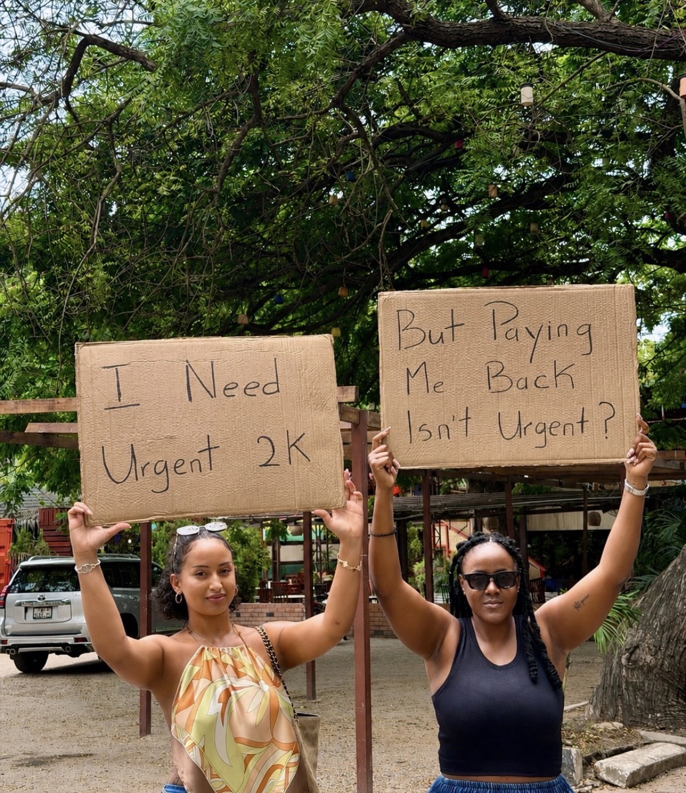
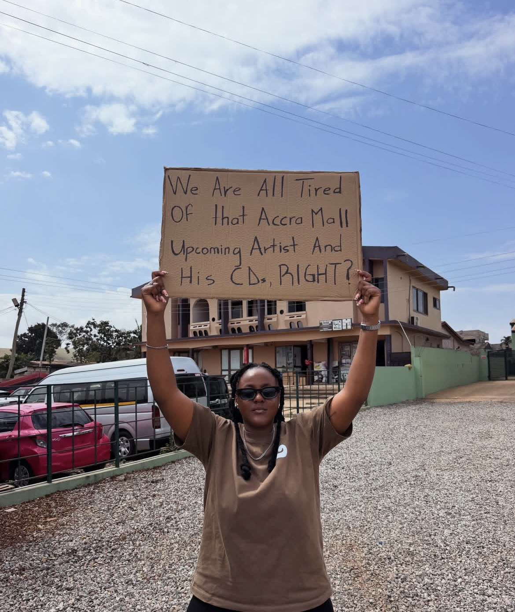
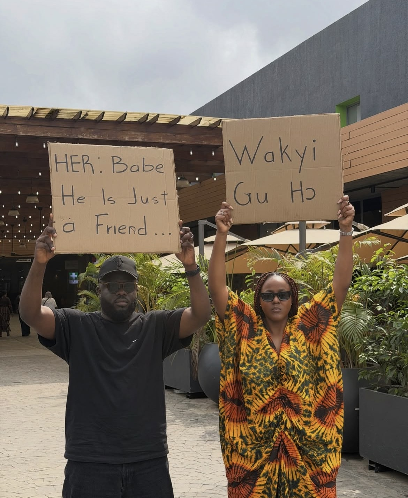

Grey with the Sign
A creator page built around relatable quotes and thoughts written on cardboard signs.
30-day views
167,794
Interactions
7,557
Net followers
+52
Thoughts worth
stopping for.
Grey with the Sign shares relatable quotes and thoughts written on cardboard signs. I manage the page and shape the ideas behind its content. In the latest 30-day period, static posts were strongest and most reach came from people who didn’t already follow the page.
My contribution.
I develop quote concepts, plan locations, shoot the content, and handle posting.
03Showcase / 06
Selected work
Images from the project


